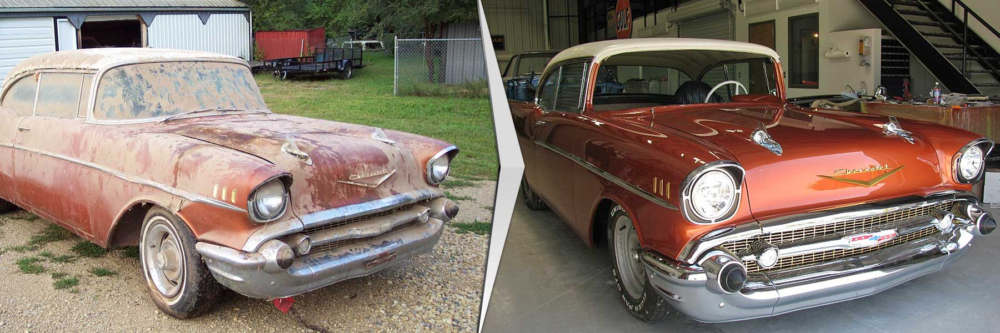

It takes months. New head lights, seats, and a paint job that makes it look almost nothing like the car you found under the dust cover. The first time you drive it, it doesn't smell like him anymore.
You kept the photograph through all of it, but months of it riding in your pocket, pulled out and studied and put back, has left it creased and ripped at the corners. It's still him. It's just a little harder to see now.
Close the garage door and start again.
